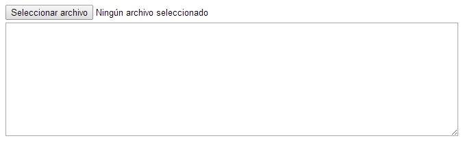
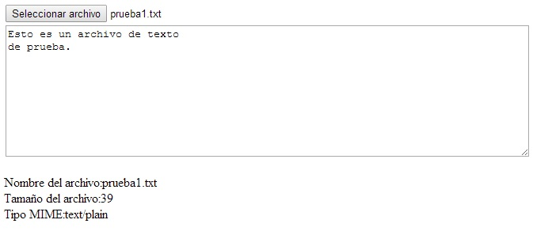

Otra funcionalidad que tenemos con el HTML5 es el acceso solo de lectura de los archivos que hay en nuestro equipo.
Veremos cual es la estructura de Javascript que debemos implementar para poder seleccionar un archivo de texto e inmediatamente poder acceder a su contenido en el navegador.
Para trabajar con archivos que se encuentran en el disco duro del equipo el usuario es el responsable de seleccionar uno. Hay varias formas para la selección del archivo, veremos primero la más común que es disponer un control HTML:
<input type="file" name="archivo">
Como sabemos este control dispone en la página web un botón que al ser presionado por el usuario aparece un diálogo para seleccionar un archivo de nuestro disco duro.
Para poder identificar cuando el usuario seleccionó un archivo debemos implementar el evento change de dicho control.
Confeccionar un programa que nos permita seleccionar de nuestro disco duro un archivo de texto y posteriormente leer su contenido y mostrarlo en un control textarea. Mostrar además su nombre, tamaño y tipo.
<!DOCTYPE HTML>
<html>
<head>
<title>Prueba</title>
<script>
window.addEventListener('load', inicio, false);
function inicio() {
document.getElementById('archivo').addEventListener('change', cargar, false);
}
function cargar(ev) {
document.getElementById('datos').innerHTML='Nombre del archivo:'+ev.target.files[0].name+'<br>'+
'Tamaño del archivo:'+ev.target.files[0].size+'<br>'+
'Tipo MIME:'+ev.target.files[0].type;
var arch=new FileReader();
arch.addEventListener('load',leer,false);
arch.readAsText(ev.target.files[0]);
}
function leer(ev) {
document.getElementById('editor').value=ev.target.result;
}
</script>
</head>
<body>
<input type="file" id="archivo"><br>
<textarea rows="10" cols="80" id="editor"></textarea>
<br>
<p id="datos"></p>
</body>
</html>
Veamos detenidamente cual debe ser la estructura de nuestro algoritmo para poder leer el contenido de un archivo de texto que se encuentra en el disco duro del equipo.
Lo primero definimos un control de tipo file que es el encargado de permitirnos seleccionar un archivo:
<input type="file" id="archivo"><br>
Disponemos un control de tipo textarea donde mostraremos el contenido del archivo que seleccione el operador:
<textarea rows="10" cols="80" id="editor"></textarea>
Finalmente disponemos un párrafo donde mostraremos el nombre de archivo que se leerá, su tamaño y tipo:
<p id="datos"></p>
Ahora veamos donde se encuentra el programa en Javascript que nos permite acceder al archivo, en la función inicio registramos el evento change del control de tipo file que se disparará cuando el usuario seleccione un archivo del disco duro:
window.addEventListener('load', inicio, false);
function inicio() {
document.getElementById('archivo').addEventListener('change', cargar, false);
}
Cuando el usuario selecciona un archivo se ejecuta la función cargar (que registramos en la función inicio), la función recibe un objeto de la clase File que lo accedemos: ev.target.files[0], este objeto tiene tres atributos name (nombre del archivo que acabamos de seleccionar), size (tamaño en bytes del archivo) y type (tipo de archivo).
Luego de mostrar las tres propiedades fundamentales del archivo procedemos a crear un objeto de la clase FileReader para poder acceder al contenido del archivo. Mediante la llamada al método readAsText procedemos a leer el contenido del archivo y registramos el evento load para indicar la función que se disparará cuando tengamos todo el archivo en memoria:
function cargar(ev) {
document.getElementById('datos').innerHTML='Nombre del archivo:'+ev.target.files[0].name+'<br>'+
'Tamaño del archivo:'+ev.target.files[0].size+'<br>'+
'Tipo MIME:'+ev.target.files[0].type;
var arch=new FileReader();
arch.addEventListener('load',leer,false);
arch.readAsText(ev.target.files[0]);
}
Por último la función leer recibe un objeto que almacena todos los datos contenidos en del archivo:
function leer(ev) {
document.getElementById('editor').value=ev.target.result;
}
Inicialmente se muestra el botón para la selección del archivo y el textarea vacío:
Luego de seleccionar un archivo de texto del disco duro podemos ver el contenido del archivo y sus propiedades (nombre, tamaño y tipo):
